Windows系统下搭建基于Hexo框架的博客网站（未完待续）
Hexo 简介
Hexo是一款基于Node.js的静态博客框架，依赖少易于安装使用，可以方便的生成静态网页托管在GitHub和Coding上，
是搭建博客的首选框架。大家可以进入Hexo官网进行详细查看，因为Hexo的创建者是台湾人，对中文
的支持很友好，可以选择中文进行查看。
Hexo 搭建步骤
1. 安装Git
2. 安装Node.js
3. 安装Hexo
...未完待续1. 安装Git
Git是目前世界上最先进的分布式版本控制系统，可以有效、高速的处理从很小到非常大的项目版本管理。也就是用
来管理你的hexo博客文章，上传到GitHub的工具。到Git官网上下载Git并安装,安装好后在cmd窗口查看一下版本检测是否安装成功
git --version
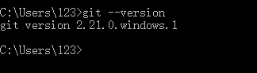
2. 安装Node.js
Hexo是基于nodeJS编写的，所以需要安装一下nodeJs和里面的npm工具
下载Node.js并安装,安装好后在cmd窗口查看一下版本检测是否安装成功
1 | node -v |
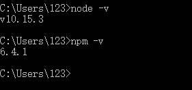
3. 安装Hexo
创建一个文件夹blog(名字随意)，选中文件夹右键Git Bash Here打开更换npm源
npm --registry https://registry.npm.taobao.org install express
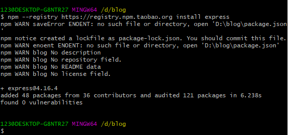
安装Hexo
npm install -g hexo-cli
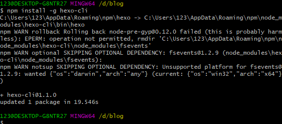
hexo -v检查版本
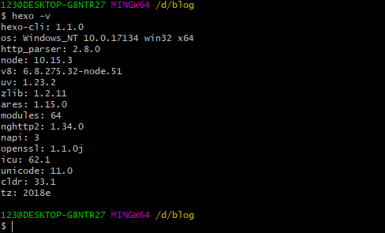
npm install安装Hexo框架依赖库
hexo init初始化Hexo
初始化完成后，会有一个默认主题以及一个hello-word的默认文章。所以我们可以先生成博客来看一下效果，运行命令：
hexo -generate //可以简写为hexo -g
hexo -server//可以简写为hexo -s
在浏览器中输入localhost:4000查看效果
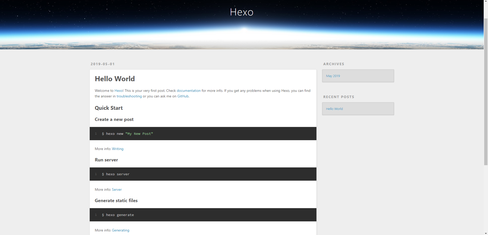
4.更换主题
有许多优秀的主题，可以自行下载尝试，这里我用next主题作为例子，修改_config.yml配置文件，在文件中查
找theme并将其值修改为next下载next主题
git clone https://github.com/theme-next/hexo-theme-next themes/next
修改_config.yml配置文件中的theme的值为next
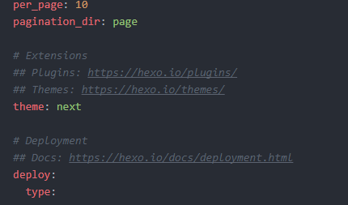
执行命令看一下效果
hexo -generate
hexo -server
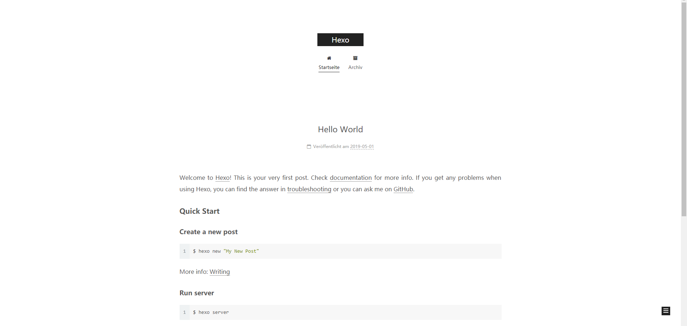
更改页面布局
修改themes文件夹下的_config.yml配置文件,用哪个就把哪个的注释打开即可，这里我选择了Gemini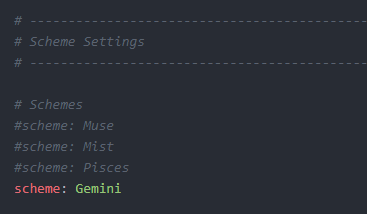
开启头像功能
修改themes文件夹下的_config.yml配置文件,把注释打开即可，如果想更换修改下图片路径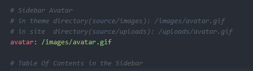
开启菜单栏其他功能
修改themes文件夹下的_config.yml配置文件,想要哪个功能，就把哪个注释打开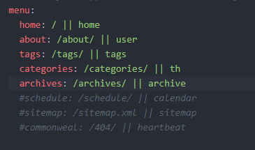